Гамбургер (Hamburger)
— базовый вариант, с которого всё началось. Состоит из пшеничной булочки, мясной котлеты (обычно из говядины), листьев салата, томатов, маринованных огурцов, лука, кетчупа и горчицы.
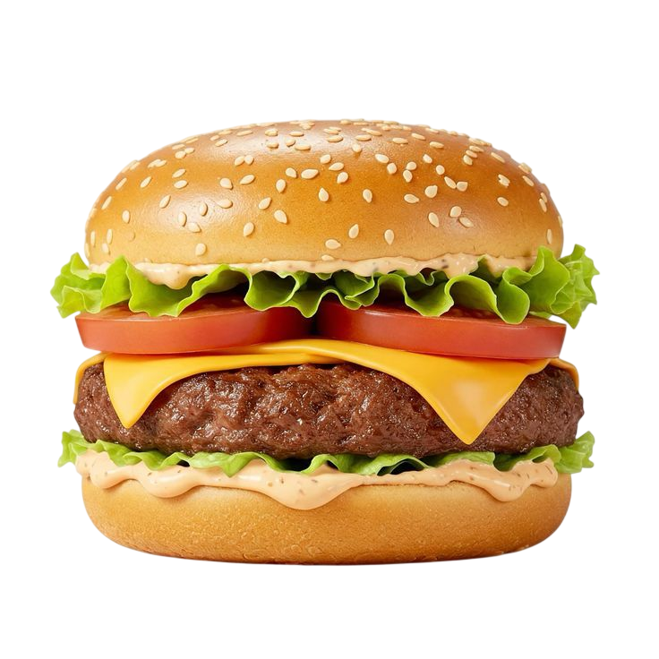
Чизбургер (Cheeseburger)
Чизбургер (Cheeseburger) — тот же гамбургер, но с обязательным добавлением ломтика расплавленного сыра (чаще всего чеддера) сверху горячей котлеты.
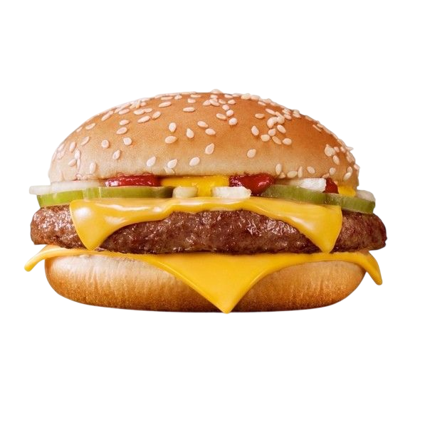
Фишбургер (Fishburger)
— вместо мясного бифштекса используется рыбная котлета или филе в панировке (например, из трески или минтая). Подается обычно с соусом тартар.
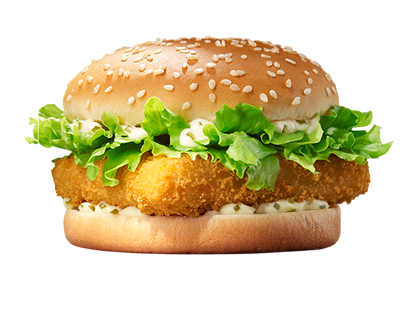
Чикенбургер (Chickenburger)
— вариант с куриным мясом. Это может быть как рубленая куриная котлета, так и цельное куриное филе (в панировке или приготовленное на гриле).
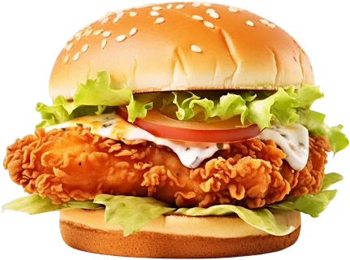
Веджибургер (Veggie burger)
— вегетарианский вариант, где котлета сделана из растительных ингредиентов: нута, фасоли, грибов, картофеля или соевого мяса.
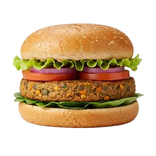
Слоппи Джо (Sloppy Joe)
— американская классика, где вместо цельной котлеты используется мясной фарш, тушенный в томатном соусе с луком и специями.
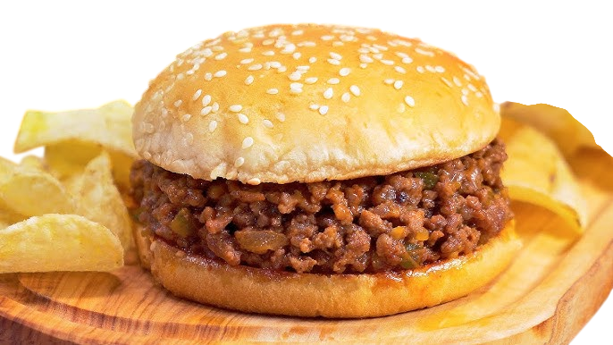
Бургер с яйцом
— сытный вариант, в который добавляется жареное яйцо (глазунья). При укусе жидкий желток служит дополнительным соусом.

BBQ-бургер
— в его состав обязательно входит бекон и пикантный соус барбекю, придающий блюду дымный аромат.
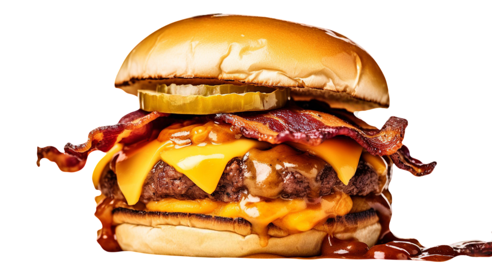
Черный бургер
— эффектный вид бургера, булочки для которого окрашиваются чернилами каракатицы или активированным углем.
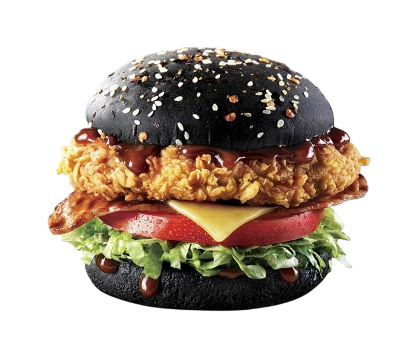
Бургер «Блю чиз» (Blue Cheese)
— изысканный вариант с добавлением пикантного сыра с плесенью (дорблю или горгонзола) и часто карамелизованного лука или груши.
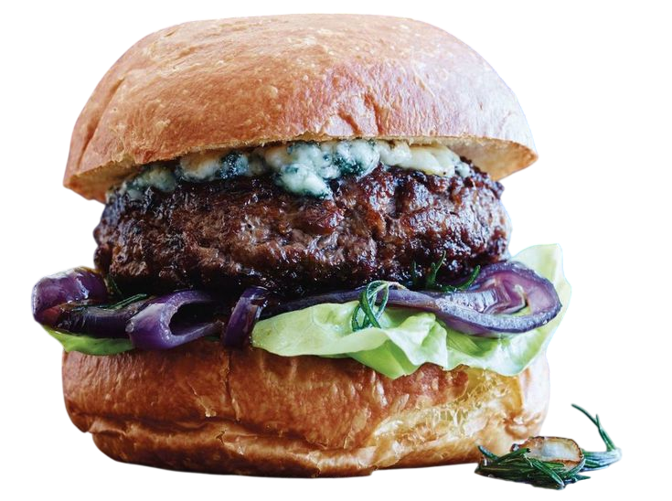
Чизбомб (Cheese Bomb Burger)
— бургер с обильным количеством сыра и сырным соусом, создающим эффект «взрывной» сырной начинки или шапочки.
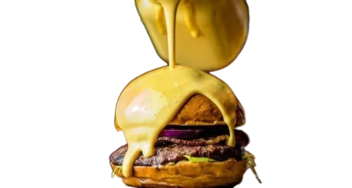
Интересные факты о бургере
Происхождение названия
Слово «гамбургер» происходит от немецкого города Гамбург. В XIX веке немецкие иммигранты привезли в США рецепт «гамбургского стейка» — рубленого мяса, обжаренного на гриле. Со временем название сократилось до «бургер».

День рождения бургера
Считается, что первый бургер в классическом виде появился 27 июля 1900 года, когда повар Луи Лассен из Нью-Хейвена (Коннектикут, США) впервые подал котлету между двумя тостами.

Переименование во время войн
Во время Первой и Второй мировых войн американское правительство пыталось переименовать бургер в «свободный сэндвич» (liberty sandwich), чтобы избежать упоминания его немецкого происхождения.
Первые сети фастфуда
В 1921 году открылась первая сеть White Castle, специализировавшаяся на гамбургерах. Бургер в то время стоил 5 центов.

Самый большой бургер
В 2012 году в Миннесоте (США) приготовили гамбургер весом 913 кг и диаметром 3 метра.

Самый дорогой бургер
В 2012 году в Нидерландах создали бургер стоимостью около 5000 долларов. В его состав входили мраморная говядина, икра и съедобное золото.

Необычные бургеры
В Японии популярны бургеры с рисовыми булочками вместо хлеба, а также с начинкой из морских водорослей и соевого соуса. В некоторых ресторанах подают бургеры с насекомыми — они считаются экологичным источником белка. Существуют также гурме-бургеры с трюфелями, фуа-гра, экзотическими сырами, чёрными булочками с чернилами каракатицы и другие необычные варианты.

Мировые объёмы потребления
Ежегодно в мире съедают более 50 миллиардов бургеров.

Популярность сетей
McDonald’s — крупнейшая сеть фастфуда, специализирующаяся на бургерах. По данным на 2018 год, сеть продавала около 75 бургеров каждую секунду по всему миру.
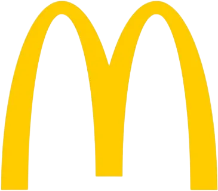
Влияние на культуру
Бургеры стали частью массовой культуры: они упоминаются в кино, на телевидении и в литературе, символизируя доступность и американский образ жизни.
Пример из фильма
Pulp Fiction(1994)
Заведение называловсь BIG KAHUNA BURGER